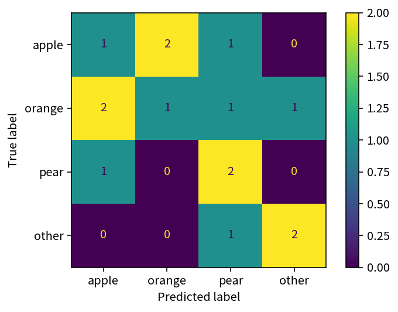

from addict import Dict
import einops as ein
import numpy as np
import pandas as pd
from sklearn import metrics
y_true = np.array([0, 1, 1, 0, 1, 3, 2, 1, 0, 2, 3, 1, 0, 2, 3])
y_pred = np.array([1, 0, 2, 1, 3, 2, 2, 1, 0, 2, 3, 0, 2, 0, 3])
labels = ["apple", "orange", "pear", "other"]
y_true_label = pd.Series([labels[i] for i in y_true])
y_pred_label = pd.Series([labels[i] for i in y_pred])混淆矩阵、宏平均、微平均和加权平均
1 引言
在机器学习中，我们经常会遇到多分类问题，这时我们需要评估模型的性能。混淆矩阵是一个非常好的工具，可以帮助我们直观地了解模型的性能。 在混淆矩阵的基础上，我们可以计算宏平均、微平均和加权平均，来评估模型的性能。
网络上的方法通常都是根据每类的混淆矩阵来计算宏平均、微平均和加权平均，但实际上可以直接通过多类的混淆矩阵来计算宏平均、微平均和加权平均。
首先，先构造两个数组，一个是真实标签，一个是预测标签。 然后，我们将标签映射到一个整数，这样我们就可以计算混淆矩阵。
2 混淆矩阵和指标
2.1 混淆矩阵
混淆矩阵是一个 n \times n 的矩阵，其中 n 是类别的个数。 对于二分类问题，混淆矩阵是一个 2 \times 2 的矩阵，对于多分类问题，混淆矩阵是一个 n \times n 的矩阵。 但是，对于多分类问题，有时我们会有一个 other 类别，这时混淆矩阵是一个 (n+1) \times (n+1) 的矩阵。
通常，混淆矩阵的行表示真实标签，列表示预测标签。 以上面的真实标签和预测标签为例，我们可以计算混淆矩阵。
cmd = metrics.ConfusionMatrixDisplay.from_predictions(
y_true_label, y_pred_label, labels=labels
)
cm = cmd.confusion_matrix
2.2 所有指标
首先，解释一下所有指标：
- precision: 精确率，是指预测为正类别的样本中，有多少是真正的正类别。
- recall: 召回率，是指真正的正类别中，有多少被预测为正类别。
- f1-score: F1分数，是精确率和召回率的调和平均数。
- fbeta-score: Fβ分数，是精确率和召回率的加权调和平均数。
- support: 支持度，是真值中每个类别出现的次数。
- accuracy: 准确率，是指正确预测的样本数占所有样本数的比例。
sklearn 提供了 classification_report 函数，可以计算所有指标。 我们先用该函数计算所有指标，后面我们再根据混淆矩阵来手动计算这些指标。
report = metrics.classification_report(
y_true_label, y_pred_label, labels=labels, output_dict=True
)
report = Dict(report)
# 由于 accuracy 是一个特殊的指标，我们需要单独处理，后面会详细说明
report["micro avg/accuracy"] = {
"precision": report.accuracy,
"recall": report.accuracy,
"f1-score": report.accuracy,
"support": report["macro avg"].support,
}
del report.accuracy
report = pd.DataFrame(report).T
print(report) precision recall f1-score support
apple 0.250000 0.250000 0.250000 4.0
orange 0.333333 0.200000 0.250000 5.0
pear 0.400000 0.666667 0.500000 3.0
other 0.666667 0.666667 0.666667 3.0
macro avg 0.412500 0.445833 0.416667 15.0
weighted avg 0.391111 0.400000 0.383333 15.0
micro avg/accuracy 0.400000 0.400000 0.400000 15.02.3 负类
有时，我们会有一个负类，即一个 other 类别，这时我们计算指标时，需要将真值的 other 类别去掉。
report_no_other = metrics.classification_report(
y_true_label, y_pred_label, labels=labels[:-1], output_dict=True
)
report_no_other = Dict(report_no_other)
report_no_other = pd.DataFrame(report_no_other).T
print(report_no_other) precision recall f1-score support
apple 0.250000 0.250000 0.250000 4.0
orange 0.333333 0.200000 0.250000 5.0
pear 0.400000 0.666667 0.500000 3.0
micro avg 0.333333 0.333333 0.333333 12.0
macro avg 0.327778 0.372222 0.333333 12.0
weighted avg 0.322222 0.333333 0.312500 12.03 手动计算所有指标
3.1 宏平均
3.1.1 计算宏平均
计算宏平均，分为以下步骤：
- 计算每个类别的指标
- 对每个类别的指标求平均
precisions = np.diag(cm) / np.sum(cm, axis=0)
recalls = np.diag(cm) / np.sum(cm, axis=1)
f1s = 2 * precisions * recalls / (precisions + recalls)
support = np.sum(cm)
metric_macro_ = pd.Series(
[precisions.mean(), recalls.mean(), f1s.mean(), support],
index=["precision", "recall", "f1-score", "support"],
)
assert np.allclose(metric_macro_, report.loc["macro avg"].to_numpy())
print(metric_macro_)precision 0.412500
recall 0.445833
f1-score 0.416667
support 15.000000
dtype: float643.2 微平均
3.2.1 计算微平均
计算微平均，分为以下步骤：
- 将所有类别看作一个类别
- 计算全局的指标
precision = np.sum(np.diag(cm)) / np.sum(cm)
recall = np.sum(np.diag(cm)) / np.sum(cm)
f1 = 2 * precision * recall / (precision + recall)
support = np.sum(cm)
metric_micro_ = pd.Series(
[precision, recall, f1, support],
index=["precision", "recall", "f1-score", "support"],
)
assert np.allclose(metric_micro_, report.loc["micro avg/accuracy"].to_numpy())
print(metric_micro_)precision 0.4
recall 0.4
f1-score 0.4
support 15.0
dtype: float643.2.2 微平均的precision、recall、f1和accuracy的关系
先说结论，对于多分类问题，有如下关系：
micro~precision = micro~recall = micro~f1 = accuracy
原因如下：
\begin{aligned} precsion & = 对角线元素之和 / 混淆矩阵每列之和 \\ & = 对角线元素之和 / 混淆矩阵所有元素之和 \end{aligned}
\begin{aligned} recall & = 对角线元素之和 / 混淆矩阵每行之和 \\ & = 对角线元素之和 / 混淆矩阵所有元素之和 \end{aligned}
\begin{aligned} f1 & = 2 * precsion * recall / (precsion + recall) \\ & = 2 * precsion * percsion / (precsion + precsion) \\ & = precsion \\ & = recall \end{aligned}
\begin{aligned} accuracy & = 正确预测的样本数 / 所有样本数 \\ & = 对角线元素之和 / 混淆矩阵所有元素之和 \end{aligned}
3.3 加权平均
3.3.1 计算加权平均
加权平均是对每个类别的指标进行加权平均，权重是每个类别的样本数，也就是每个类别的支持度(support)。
supports = np.sum(cm, axis=1)
supports_normalized = supports / np.sum(supports)
precisions = np.diag(cm) / np.sum(cm, axis=0)
recalls = np.diag(cm) / np.sum(cm, axis=1)
f1s = 2 * precisions * recalls / (precisions + recalls)
metric_weighted_ = pd.Series(
[
np.sum(precisions * supports_normalized),
np.sum(recalls * supports_normalized),
np.sum(f1s * supports_normalized),
np.sum(supports),
],
index=["precision", "recall", "f1-score", "support"],
)
assert np.allclose(metric_weighted_, report.loc["weighted avg"].to_numpy())
print(metric_weighted_)precision 0.391111
recall 0.400000
f1-score 0.383333
support 15.000000
dtype: float643.3.2 加权平均的recall和accuracy的关系
先说结论，对于多分类问题，有如下关系：
weighted~recall = accuracy
原因如下：
\begin{aligned} 每个类别的加权 recall & = 该类别的 recall * 该类别的权值 \\ & = ( 该类别的对角线元素 / 该元素所在行之和 ) * ( 该元素所在行之和 / 所有元素之和 ) \\ & = 该类别的对角线元素 / 所有元素之和 \end{aligned}
\begin{aligned} 总体的加权 recall & = 所有类别的加权 recall 之和 \\ & = 所有类别的对角线元素之和 / 所有元素之和 \\ & = accuracy \end{aligned}
4 总结
4.1 混淆矩阵和指标的关系
从上面的计算可以看出，不同的指标就是对混淆矩阵的不同处理方方式。
本质上来说，所有指标都是混淆矩阵的一个数字特征，是从不同的角度来看待混淆矩阵。
所以，如果有了混淆矩阵，我们就可以计算出所有指标，因为混淆矩阵包含了指标的所有信息。
4.2 特殊关系
对于多分类问题，有如下关系：
micro~precision = micro~recall = micro~f1 = accuracy = weighted~recall